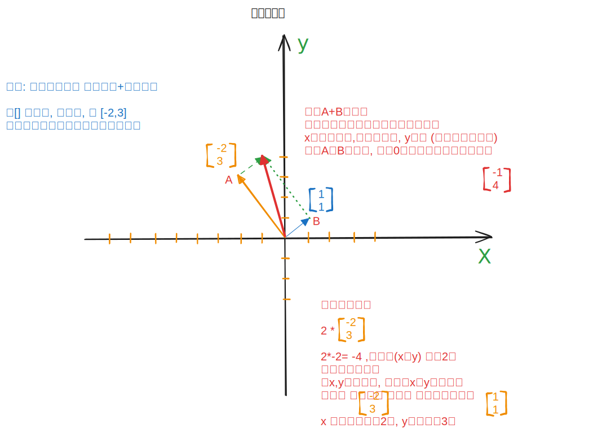
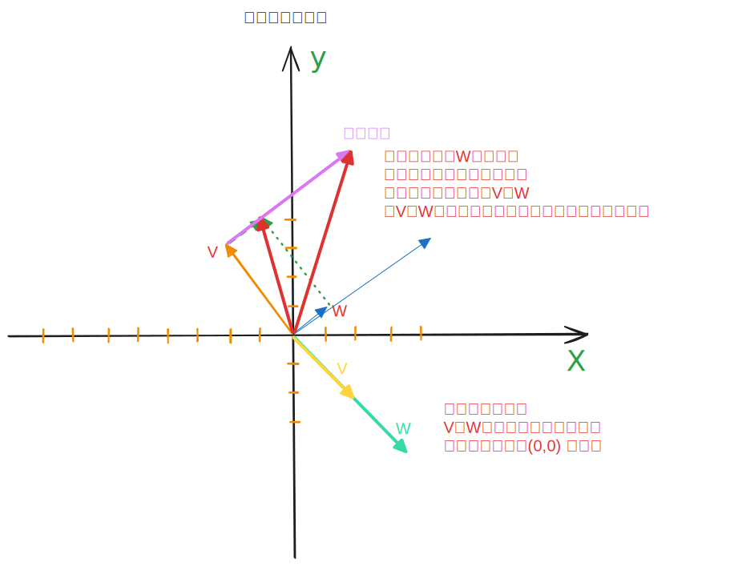
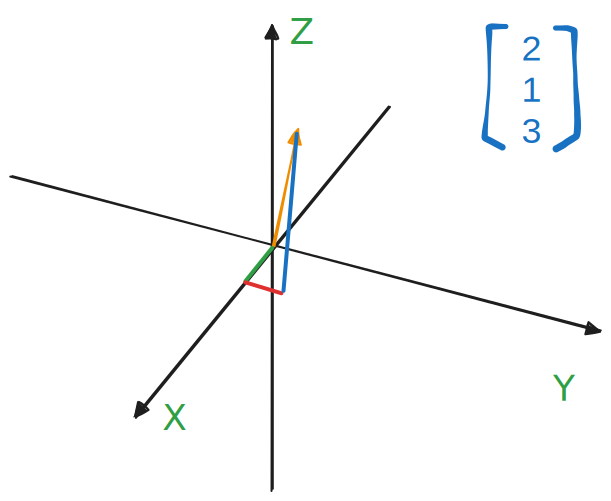
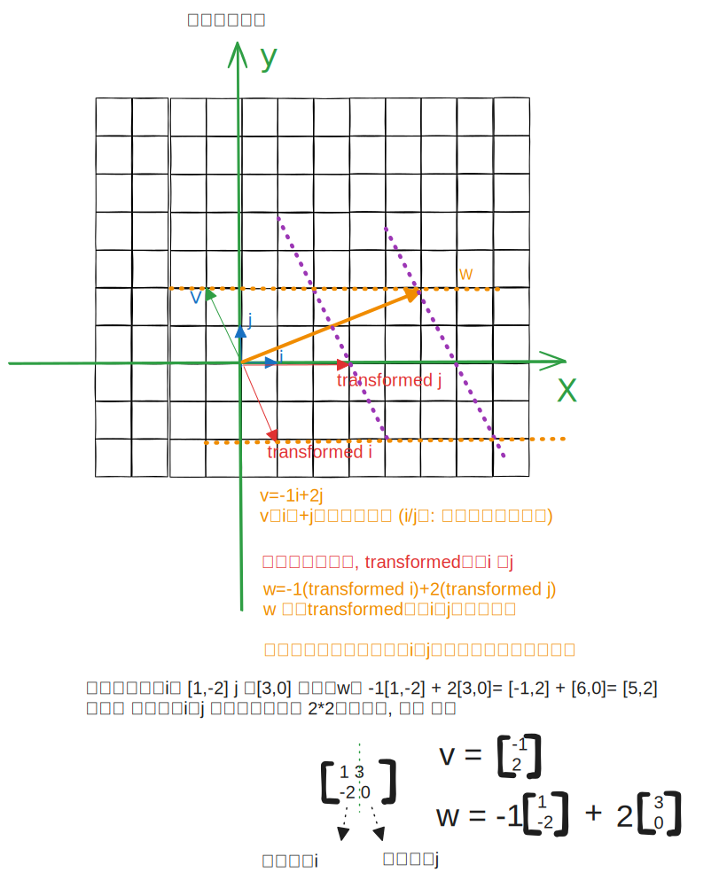
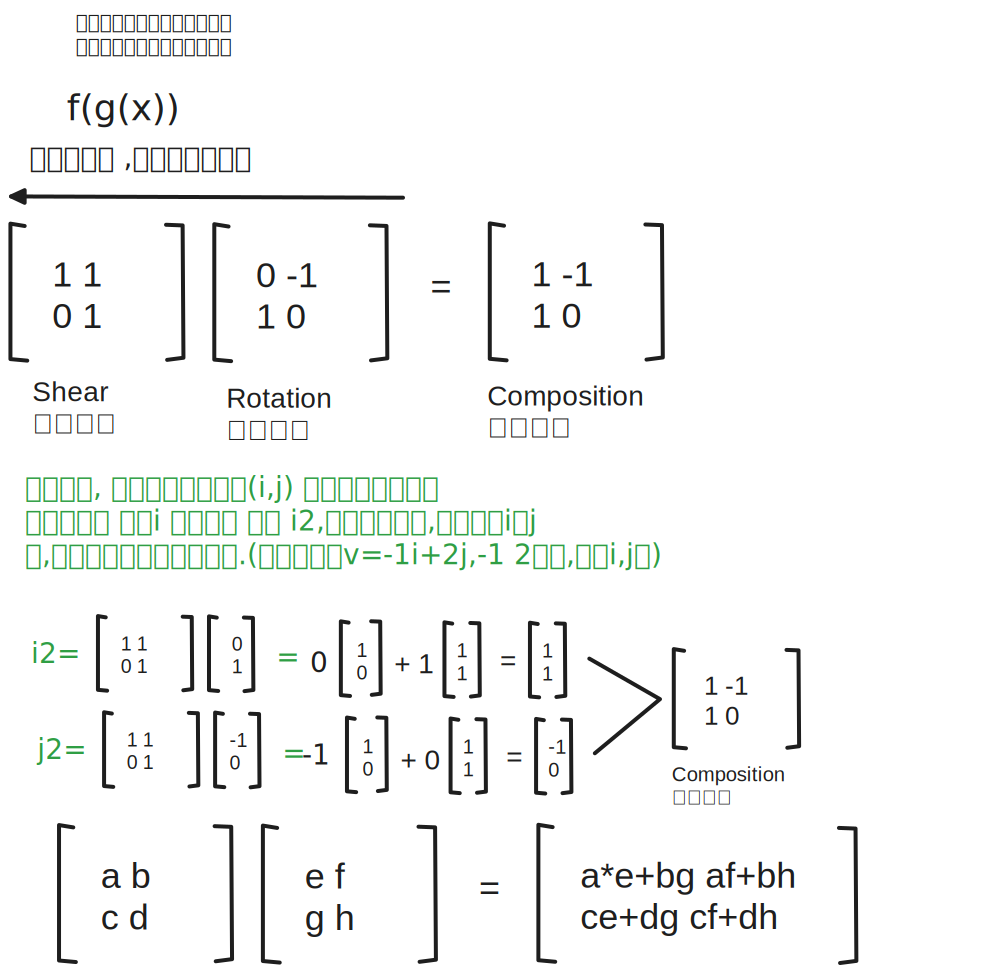

1 向量
2 向量的线性组合
向量v和w ,如果以它们为基向量,然后a*v+b*w这个结果集 ,我们称为v和w这2个向量的向性组合 (向量张成的空间: 下面提到的平面或一条线)
如果在多个向量中比如(v和w 在一条线上的情况),你移除了一个向量, 而张成的空间没有减少,则这个向量 v和w 是 ==线性相关的==, 或者说其中一个向量v 是w所在向量张成的空间内, 或是说v 可以表示为w的向性组合.
同样,如果所有向量给张成的空间增加了新的维度, 那么它们就被称为”向性无关”.
而一组这样向性无关的向量集是张成该空间的一组基(比如二维的情况, 向性无关的v和w 就能画出一个平面,v和w 就称为一组基)
3 三维
三维的向性组合一样, 如果是2个向量
V+W 的向性组合, 是一个圆(二维平面) 或者一条线
v+w+u 3个向量的线性组合呢? 可以先v+w 进行计算, 这里的组合最大是一个平面, 这种情况和u相加,就是整个球了, 三维的 所有可能了
4 向量与点
由于在向量表示上, 我们是一个长度加上ygie箭头, 在图形表示上 如果有很多向量的话,会让画面很拥挤, 所以可以用点 来表示向量, 当然如果只有一个向量的时候,用箭头更好.
所以我们将多个向量用点来表示
5 矩阵 (Matrix)
5.1 线性变换
变换: 可以理解为函数, 输入->得到输出
接收一个向量(vector input) ,输出一个向量(vector output)
使用变换这个词, 是因为我们想用一种特殊方式来可视化这个-输入输出关系, 变换这个词是希望你使用 {==运动==}去思考
首先变换后还是一个向量, 在二维中
每一个v 都可以通过转换 i和j ,通过旋转等方式来得出转换后的w,试着想一下,你拉长i/j,旋转等这种运动的方式来得到w, 保持平行,等距分布
当你看到一个2*2的矩阵时, 你脑子里想到的是一种空间的变换,从标准的 90度i,j基准向量 –> 平行的等距某个角度的 新基准向量 i和j
6 复合矩阵
乘积顺序变化会影响结果的, 比如先剪切后旋转 和先旋转再剪切 结果不一样
结合律 : ABC=(AB)C=A(BC) 注意从右向左 运动, 反正都是先运动C,再B,C,
这和上面说的顺序不一样, 先剪切后旋转是 AB, 反过来就是BA了